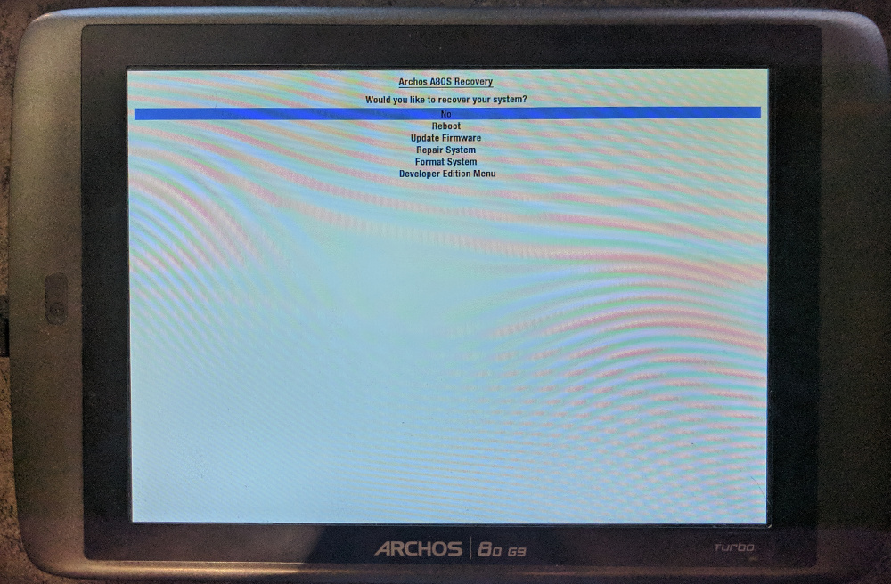

Archos 80 G9 Turbo

Archos 80 G9 Turbo
|
| Manufacturer |
Archos |
| Name |
80 G9 Turbo |
| Codename |
archos-a80 |
| Released |
2012 |
| Category |
testing |
| Original software |
Android 4.0 ICS |
| Hardware |
|---|
| Chipset |
TI OMAP 4460 |
| CPU |
Dual-core 1GHz Cortex-A9 |
| Display |
1024x768 TN |
| Storage |
16 GB |
| Memory |
1 GB |
| Architecture |
armv7 |
|
Features
| USB Networking |
|
| Flashing |
|
| Touchscreen |
|
| Display |
|
| WiFi |
|
| FDE |
|
| Mainline |
|
| Battery |
|
| 3D Acceleration |
|
| Audio |
|
| Bluetooth |
|
| Camera |
|
| GPS |
|
| Mobile data |
|
| SMS |
|
| Calls |
|
| USB OTG |
|
| NFC |
|
|
Sensors
| Accelerometer |
|
| Magnetometer |
|
| Ambient Light |
|
| Proximity |
|
| Hall Effect |
|
|
Contributors
Device owners
How to enter flash mode
You can enter flash mode with Power + Volume Up or Power + Volume Down after installing the SDE bootmenu.
Installation
The first step is installing SDE bootmenu so you'll be able to actually flash non-archos software to the device. This will void your warranty!
- Power on the tablet while holding the Volume Down button, release the Power button as soon as the archos logo shows up but hold the Volume Down button.
- Choose "Update Firmware" with the Volume Up and Volume Down buttons and press the Power button to accept
- The device now shows up as an empty mass storage device, mount the device and download the SDE bootmenu image to it.
- Unmount the mass storage device and press the power button again on the device to install
Flashing the kernel and initramfs
After installing SDE bootmenu you can install the kernel and initramfs. This is also done through a mass storage device.
- Power on the tablet while holding Volume Down
- Select "Developer Edition Menu"
- The first time you flash a kernel you'll have to remove the android kernel since the bootloader will default to that kernel over your custom developer kernel.
- Select "Flash Kernel and Initramfs"
- Mount the mass storage device that just appeared
Links
SDE Bootmenu installation on XDA
{kind=link}